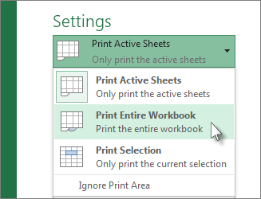
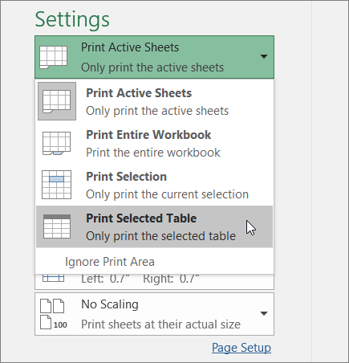
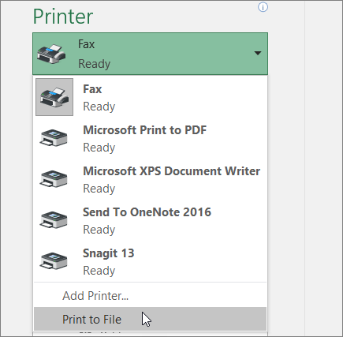

You can print entire or partial worksheets and workbooks, one at a time, or several at once. And if the data that you want to print is in a Microsoft Excel table, you can print just the Excel table.
You can also print a workbook to a file instead of to a printer. This is useful when you need to print the workbook on a different type of printer from the one that you originally used to print it.
Select the worksheets that you want to print.
Click File > Print, or press CTRL+P.
Click the Print button or adjust Settings before you click the Print button.
All workbook files that you want to print must be in the same folder.
Click File > Open.
Hold down CTRL click the name of each workbook to print, and then click Print.
Click the worksheet, and then select the range of data that you want to print.
Click File, and then click Print.
Under Settings, click the arrow next to Print Active Sheets and select the appropriate option.
Click Print.
Note: If a worksheet has defined print areas, Excel will print only those print areas. If you don't want to print only the defined print area, select the Ignore print area check box.
Click a cell within the table to enable the table.
Click File, and then click Print.
Under Settings, click the arrow next to Print Active Sheets and select Print Selected Table.
Click Print.
Click File, and then click Print, or press Ctrl+P.
Under Printer, select Print to File.
Click Print.
In the Save Print Output As dialog box, enter a file name and then click OK. The file will be saved in your Documents folder